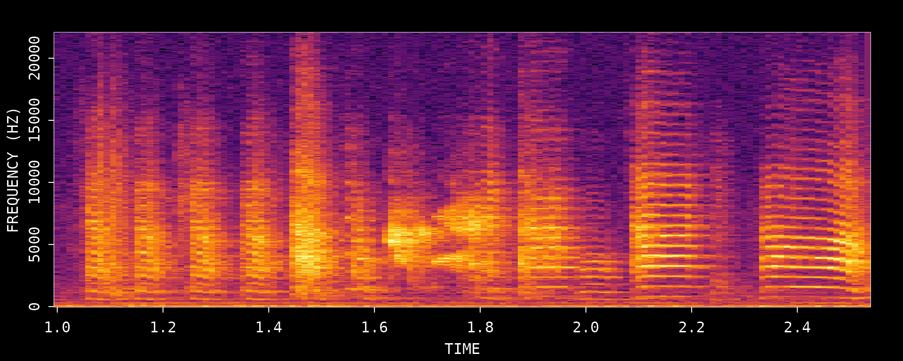
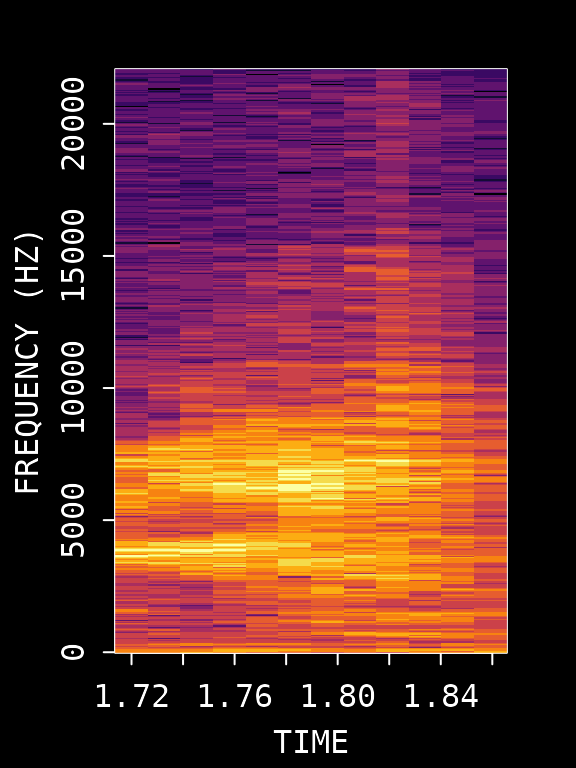
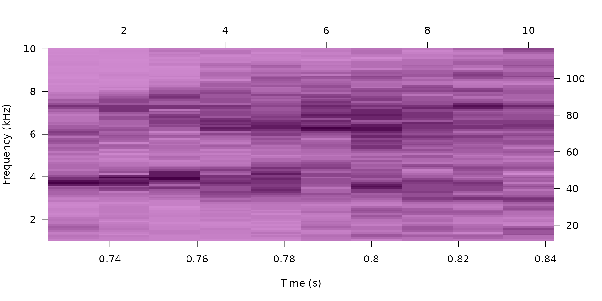
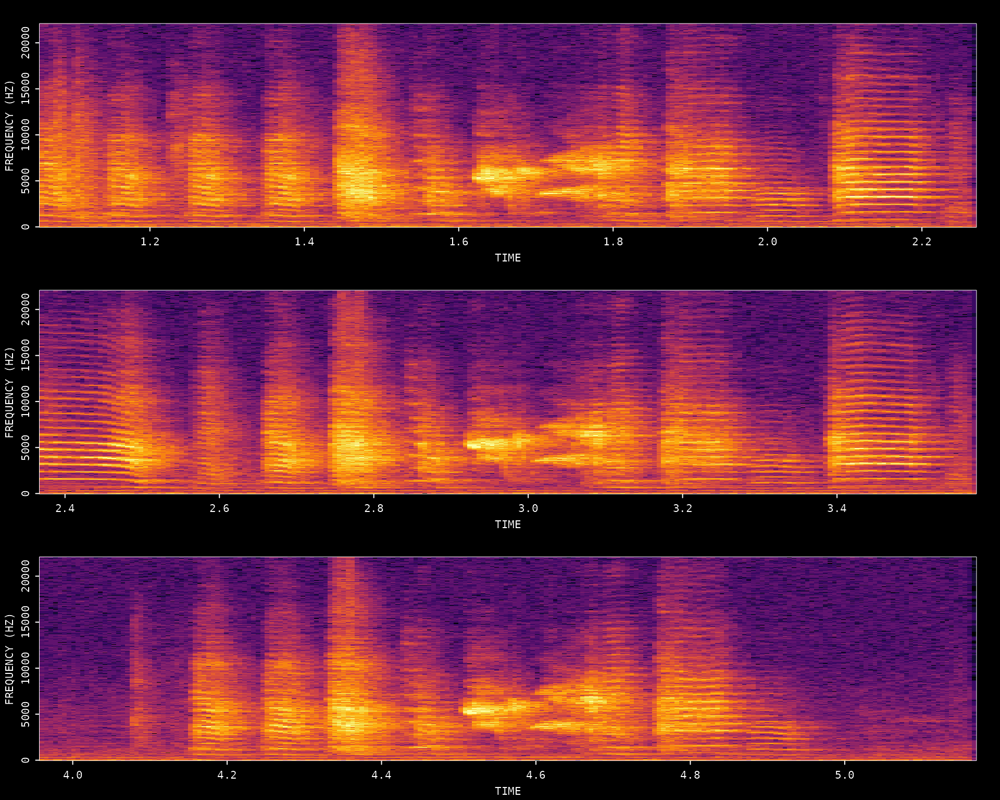
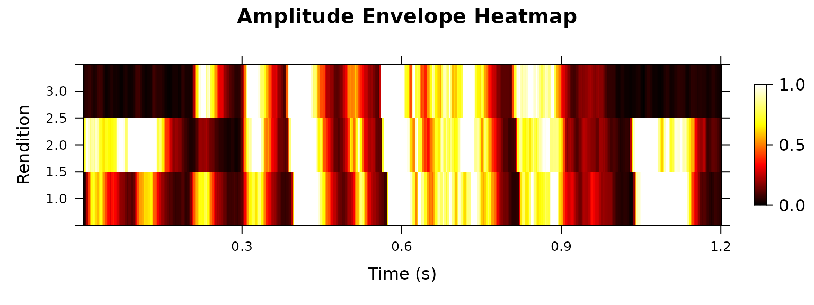
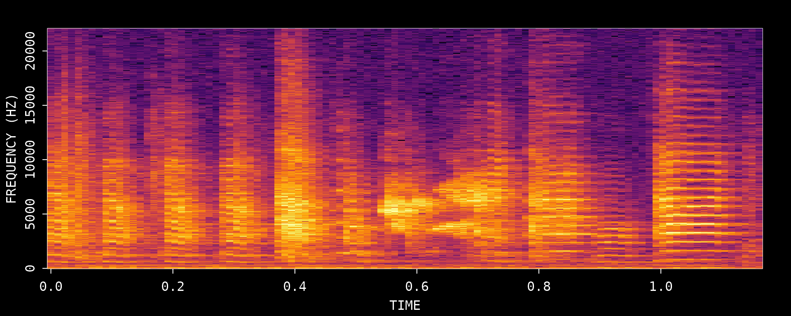
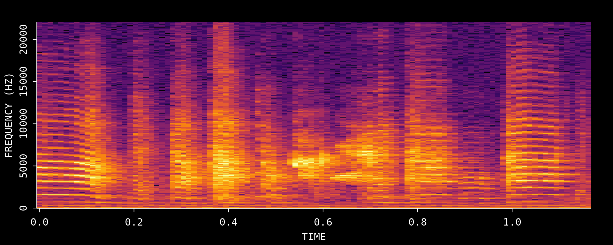
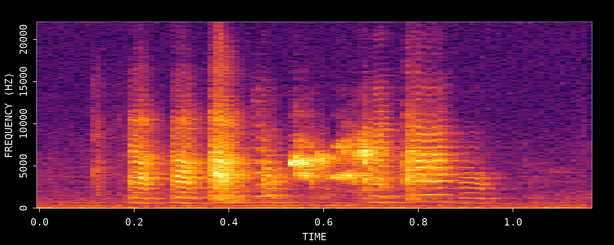

Introduction
This vignette demonstrates how to find and extract song motifs from a single zebra finch WAV file using ASAP’s template matching workflow. A motif is the stereotyped sequence of syllables that adult male zebra finches repeat during singing.
This tutorial introduces the core logic of template-based motif detection in ASAP. The emphasis is on interactively optimizing a reliable “anchor” template using one recording before carrying the same strategy into longitudinal analysis.
Prerequisites: Before reading this vignette, we recommend completing:
- Overview: ASAP 101 - Basic ASAP functions
What you will learn:
- How to choose a good reference motif from a single recording
- How to create and test a syllable template for motif detection
- How to verify extracted motifs with spectrograms and heatmaps
- How to export detected motifs as standalone clips
Overview
Motif detection in ASAP is an iterative single-file workflow: identify a clear motif rendition, choose a distinctive anchor syllable, detect that template throughout the recording, and then inspect the extracted motifs. Unlike the SAP object tutorials, the goal here is not to present a full batch-processing pipeline. Instead, this vignette focuses on the small decisions that make a template robust before you scale up.
Iterative optimization: Steps 3-6 should usually be repeated more than once. Refining the template is the most important part of getting reliable motif boundaries later in longitudinal analysis.
Setup
library(ASAP)
#> ASAP v0.3.5.9000 loaded.
# Get path to example WAV file included with the package
wav_file <- system.file("extdata", "zf_example.wav", package = "ASAP")1. Visualize the Song
First, let’s look at the full recording to identify motif structure:
visualize_song(wav_file)
#> Song visualization completed for: zf_example.wavWe can see multiple motif renditions in this recording. Let’s zoom in on a clear section to identify a good reference motif:
visualize_song(wav_file,
start_time_in_second = 1,
end_time_in_second = 2.5
)
#> Song visualization completed for: zf_example.wavThis zoomed view helps you choose a clean motif rendition with clear syllable boundaries and minimal overlap from neighboring vocalizations.
2. Create an Audio Clip
To create a template, we first extract an audio clip containing a clear motif. We’ll use the segment from 1-2.5 seconds which contains a complete motif.
# Create an audio clip from the WAV file
clip_path <- create_audio_clip(wav_file,
start_time = 1,
end_time = 2.5
)
#> Song clip clip_zf_example.wav is generated.
# View the created clip path
clip_path
#> [1] "/home/runner/work/_temp/Library/ASAP/extdata/templates/clip_zf_example.wav"3. Create a Template (Critical Step)
Creating a good template is the most critical step in the motif detection workflow. The template serves as an “anchor point” that ASAP uses to locate motifs throughout recordings. A poorly chosen template will result in missed detections or false positives.
Characteristics of a Good Template Syllable
When selecting a syllable for template creation, look for one that:
- Is acoustically distinctive - Has unique spectral features that differentiate it from other syllables and background noise
- Occurs exactly once per motif - Ensures one-to-one mapping between detections and motifs
- Has clear temporal boundaries - Sharp onset and offset for precise alignment
- Is consistently produced - Appears reliably across all motif renditions
- Is stable across development - If analyzing longitudinal data, choose a syllable that remains recognizable over time
Template Selection Process
Based on the spectrogram above, we’ll use syllable “d” which occurs around 0.72-0.84 seconds within our clip. Let’s visualize this specific region:
# First, visualize the template region
visualize_song(wav_file,
start_time_in_second = 1 + 0.72,
end_time_in_second = 1 + 0.84
)
#> Song visualization completed for: zf_example.wavNow create the template with specified frequency bounds:
# Create the template
template <- create_template(clip_path,
template_name = "d",
start_time = 0.72,
end_time = 0.84,
freq_min = 1,
freq_max = 10,
write_template = FALSE
)
#>
#> Automatic point selection.
#>
#> Done.
# View template info
template
#>
#> Object of class "corTemplateList"
#> containing 1 templates
#> original.recording
#> d /home/runner/work/_temp/Library/ASAP/extdata/templates/clip_zf_example.wav
#> sample.rate lower.frequency upper.frequency lower.amp upper.amp duration
#> d 44100 1.034 9.991 -80.41 0 0.104
#> n.points score.cutoff
#> d 1050 0.6Key Template Parameters
| Parameter | Description | Optimization Tips |
|---|---|---|
start_time/end_time |
Syllable boundaries | Adjust to capture complete syllable without gaps |
freq_min/freq_max |
Frequency range (kHz) | Narrow range reduces noise; 1-10 kHz typical for zebra finch |
Tuning tips
- If the template matches too many unrelated sounds, narrow
freq_min/freq_maxaround the most distinctive part of the syllable. - If good motif renditions are being missed, expand the time window slightly so the full syllable is captured.
- Prefer a syllable that appears once per motif; repeated syllables are more likely to produce ambiguous detections.
4. Detect Template Occurrences
Now we search for all occurrences of this template throughout the recording:
# Run template detection on the original WAV file
# proximity_window filters out multiple detections within the same motif
template_matches <- detect_template(
x = wav_file,
template = template,
proximity_window = 1, # Filter detections within 1s
save_plot = FALSE
)
# View detection results
knitr::kable(template_matches, digits = 2)| filename | template | time | score |
|---|---|---|---|
| zf_example.wav | d | 1.76 | 0.93 |
| zf_example.wav | d | 3.07 | 0.77 |
| zf_example.wav | d | 4.66 | 0.79 |
Key Detection Parameters
| Parameter | Description | Purpose |
|---|---|---|
proximity_window |
Time window (seconds) to filter nearby detections | Eliminates false positives within a motif duration. Only the highest-scoring detection within each window is retained. |
threshold |
Minimum correlation score (0-1) | Set during template creation; detections below this score are discarded(available for sap method) |
Evaluating Detection Quality
Review the detection results carefully:
- Score column: Higher scores indicate better matches. If scores are uniformly low, the template may need adjustment.
- Number of detections: Should match expected motif count based on visual inspection.
- Detection spacing: Detections should be evenly spaced if motifs occur regularly.
If detection results are unsatisfactory, return to Step 3 and try:
- Different syllable selection
- Adjusting time boundaries
- Modifying frequency range
5. Extract Motif Boundaries
Once we have reliable template detections, we define motif boundaries by extending a fixed time window before and after each detection:
# Define motif boundaries around each detection
# pre_time: how much before the template to include
# lag_time: how much after the template to include
motifs <- find_motif(template_matches,
pre_time = 0.7,
lag_time = 0.5,
wav_dir = dirname(wav_file)
)
#> Processed zf_example.wav: 3/3 valid motifs (0 excluded)
#> Total valid motifs found: 3 (excluded: 0)
# View extracted motifs
knitr::kable(motifs, digits = 2)| filename | detection_time | start_time | end_time | duration |
|---|---|---|---|---|
| zf_example.wav | 1.76 | 1.06 | 2.26 | 1.2 |
| zf_example.wav | 3.07 | 2.37 | 3.57 | 1.2 |
| zf_example.wav | 4.66 | 3.96 | 5.16 | 1.2 |
6. Visualize Detected Motifs
Let’s visualize the detected motifs to verify our detection worked correctly:
# Visualize all extracted motifs
visualize_segments(motifs,
wav_dir = dirname(wav_file),
n_samples = min(nrow(motifs), 4)
)
#> Song visualization completed for: zf_example.wav
#> Song visualization completed for: zf_example.wav
#> Song visualization completed for: zf_example.wavQuality Check
Examine the extracted motifs:
- Are all motifs complete (no truncation at boundaries)?
- Are motifs properly aligned?
- Are there any false positives (non-motif sounds)?
- Is the temporal structure consistent across renditions?
If issues are found, iterate back through Steps 3-6 with adjusted parameters.
7. Amplitude Envelope Heatmap
Once satisfied with detection quality, create a heatmap of amplitude envelopes across all detected motifs to visualize the temporal structure:
# Plot amplitude envelope heatmap
plot_heatmap(motifs, wav_dir = dirname(wav_file))
A well-detected set of motifs will show consistent vertical banding patterns corresponding to syllables across all renditions.
8. Export Motif Clips
Once you are satisfied with the detected motif boundaries, you can export each motif as its own WAV file. This is useful for manual review, sharing examples, or preparing a small set of motif clips for downstream analysis.
Step 1: Create a temporary export directory
# Create a temporary directory for exported motif clips
motif_export_dir <- file.path(tempdir(), "asap_motif_export")
dir.create(motif_export_dir, recursive = TRUE, showWarnings = FALSE)
# Initialize objects filled in by the export step
motif_export_meta <- NULL
exported_motif_files <- character(0)Step 2: Export all detected motifs
create_motif_clips() reads the detected motif table and
writes one WAV file per motif. For this example recording, the three
detected motifs are small enough that we can export all of them.
if (!is.null(motifs) && nrow(motifs) > 0) {
motif_export_meta <- create_motif_clips(
motifs,
wav_dir = dirname(wav_file),
output_dir = motif_export_dir,
output_format = "wav",
write_metadata = FALSE,
verbose = FALSE
)
}Step 3: Review the export metadata
The returned metadata table tracks the original motif boundaries and the output path of each generated file.
if (!is.null(motif_export_meta) && nrow(motif_export_meta) > 0) {
exported_motif_files <- motif_export_meta$output_path
knitr::kable(
motif_export_meta[, c("clip_id", "start_time", "end_time", "duration", "output_path")],
digits = 3
)
}| clip_id | start_time | end_time | duration | output_path |
|---|---|---|---|---|
| motif_001 | 1.06 | 2.26 | 1.2 | /tmp/Rtmpth190C/asap_motif_export/motifs/unknown_bird/unknown_day/motif_001.wav |
| motif_002 | 2.37 | 3.57 | 1.2 | /tmp/Rtmpth190C/asap_motif_export/motifs/unknown_bird/unknown_day/motif_002.wav |
| motif_003 | 3.96 | 5.16 | 1.2 | /tmp/Rtmpth190C/asap_motif_export/motifs/unknown_bird/unknown_day/motif_003.wav |
Step 4: Visualize the exported motif files
Because this example only contains three motifs, we can inspect every exported clip directly.
if (length(exported_motif_files) > 0) {
for (i in seq_along(exported_motif_files)) {
visualize_song(exported_motif_files[i])
}
}
#> Song visualization completed for: motif_001.wav
#> Song visualization completed for: motif_002.wav
#> Song visualization completed for: motif_003.wav


Summary
This vignette demonstrated the core ASAP workflow for finding motifs in a single recording. The key insight is that template optimization is an iterative process — Steps 3-6 should be repeated until detection results are satisfactory.
| Step | Function | Description |
|---|---|---|
| 1 | visualize_song() |
View spectrogram to identify motifs |
| 2 | create_audio_clip() |
Extract a reference motif segment |
| 3 | create_template() |
Create a template from a distinctive syllable |
| 4 | detect_template() |
Find all template occurrences |
| 5 | find_motif() |
Define motif boundaries around detections |
| 6 | visualize_segments() |
View extracted motif spectrograms |
| 7 | plot_heatmap() |
Visualize amplitude envelope patterns |
| 8 | create_motif_clips() |
Export detected motifs as WAV clips |
Key Parameters Reference
| Parameter | Description | Typical Value |
|---|---|---|
start_time/end_time |
Template time limits (seconds) | 0.1-0.2s duration |
freq_min/freq_max |
Frequency range (kHz) | 1-10 kHz for zebra finch |
pre_time |
Time before template for motif start | 0.2-0.8s |
lag_time |
Time after template for motif end | 0.2-0.8s |
Next Steps: Longitudinal Recording Analysis with SAP Object
Once you have optimized template parameters using a single recording (as demonstrated in this vignette), you can apply them to bulk processing of longitudinal recordings using SAP objects.
The following vignettes cover the longitudinal analysis workflow:
- Constructing SAP Object - How to organize and import longitudinal recording data
- Longitudinal Motif Detection - Applying optimized templates across multiple recordings
Session Info
sessionInfo()
#> R version 4.5.3 (2026-03-11)
#> Platform: x86_64-pc-linux-gnu
#> Running under: Ubuntu 24.04.4 LTS
#>
#> Matrix products: default
#> BLAS: /usr/lib/x86_64-linux-gnu/openblas-pthread/libblas.so.3
#> LAPACK: /usr/lib/x86_64-linux-gnu/openblas-pthread/libopenblasp-r0.3.26.so; LAPACK version 3.12.0
#>
#> locale:
#> [1] LC_CTYPE=C.UTF-8 LC_NUMERIC=C LC_TIME=C.UTF-8
#> [4] LC_COLLATE=C.UTF-8 LC_MONETARY=C.UTF-8 LC_MESSAGES=C.UTF-8
#> [7] LC_PAPER=C.UTF-8 LC_NAME=C LC_ADDRESS=C
#> [10] LC_TELEPHONE=C LC_MEASUREMENT=C.UTF-8 LC_IDENTIFICATION=C
#>
#> time zone: UTC
#> tzcode source: system (glibc)
#>
#> attached base packages:
#> [1] stats graphics grDevices utils datasets methods base
#>
#> other attached packages:
#> [1] ASAP_0.3.5.9000
#>
#> loaded via a namespace (and not attached):
#> [1] sass_0.4.10 generics_0.1.4 tidyr_1.3.2 lattice_0.22-9
#> [5] digest_0.6.39 magrittr_2.0.5 evaluate_1.0.5 grid_4.5.3
#> [9] RColorBrewer_1.1-3 fastmap_1.2.0 jsonlite_2.0.0 Matrix_1.7-4
#> [13] monitoR_1.2 tuneR_1.4.7 purrr_1.2.1 scales_1.4.0
#> [17] pbapply_1.7-4 textshaping_1.0.5 jquerylib_0.1.4 cli_3.6.5
#> [21] rlang_1.2.0 pbmcapply_1.5.1 withr_3.0.2 seewave_2.2.4
#> [25] cachem_1.1.0 yaml_2.3.12 av_0.9.6 tools_4.5.3
#> [29] parallel_4.5.3 dplyr_1.2.1 ggplot2_4.0.2 reticulate_1.45.0
#> [33] vctrs_0.7.2 R6_2.6.1 png_0.1-9 lifecycle_1.0.5
#> [37] fs_2.0.1 MASS_7.3-65 ragg_1.5.2 pkgconfig_2.0.3
#> [41] desc_1.4.3 pkgdown_2.2.0 pillar_1.11.1 bslib_0.10.0
#> [45] gtable_0.3.6 glue_1.8.0 Rcpp_1.1.1 systemfonts_1.3.2
#> [49] xfun_0.57 tibble_3.3.1 tidyselect_1.2.1 knitr_1.51
#> [53] farver_2.1.2 htmltools_0.5.9 patchwork_1.3.2 rmarkdown_2.31
#> [57] signal_1.8-1 compiler_4.5.3 S7_0.2.1